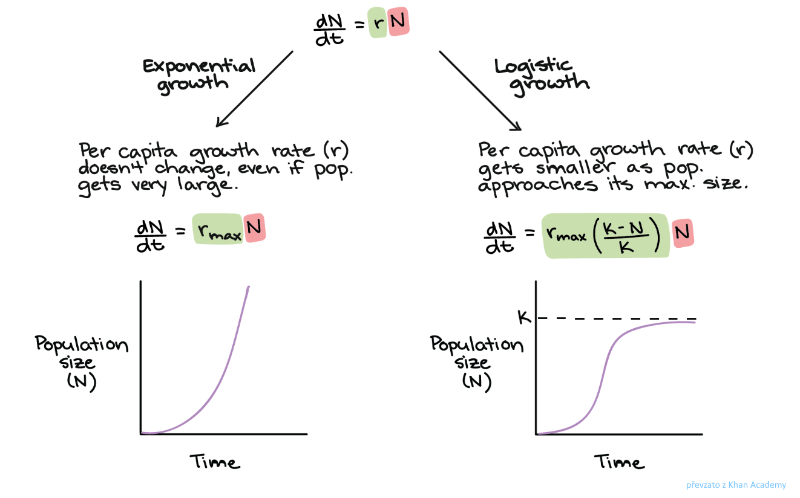
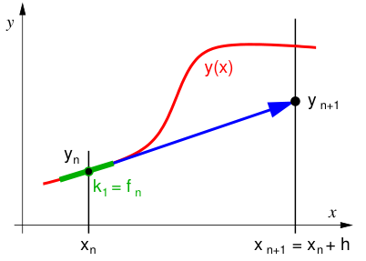
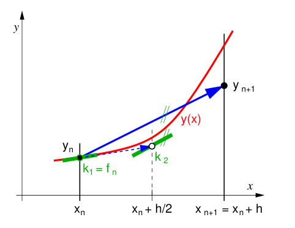
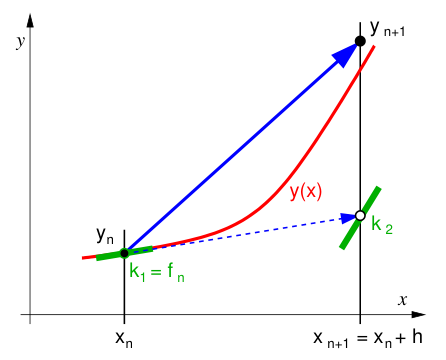
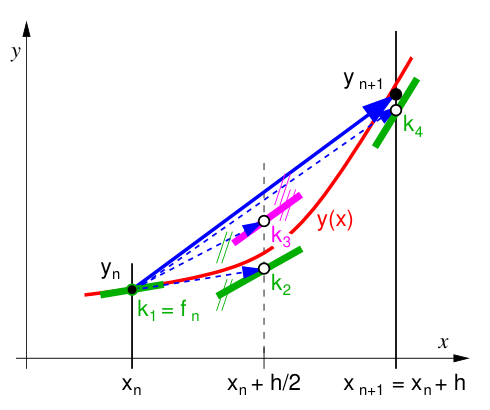
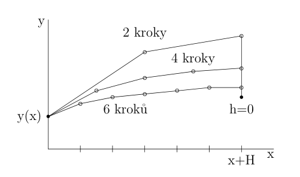

Řešení obyčejných diferenciálních rovnic (ODR)#
V této kapitole se seznámíme s řešením obyčejných diferenciálních rovnic (ODR) na počítači. Obecný tvar ODR N-tého řádu je následující:
kde \(y^{(i)}(0) = y_0^i\) je sada \(n\) počátečních podmínek pro hodnoty jednotlivých derivací funkce \(y\) v počátečním bodě \(0\). Vidíme, že diferenciální rovnice není sama o sobě kompletní řešitelnou úlohou. Jelikož máme vztah obsahující derivace neznámé funkce, potřebujeme vždy znát nějaké okrajové nebo počáteční podmínky. Zde jsme představili případ, kdy známe počáteční hodnotu všech derivací funkce \(y\) do stupně \(n-1\) v jednom bodě. Taková úloha se nazývá počáteční problém. Druhým typem úlohy (okrajový problém), kdy podmínky nemusí být zadané pouze v jednom bodě, se budeme zabývat v posledním cvičení.
Předchozí diferenciální rovnici lze vždy převést na soustavu \(n\) obyčejných diferenciálních rovnic prvního řádu (viz přednáška):
nebo vektorově:
Obyčejné diferenciální rovnice typicky popisují vývoj určitého dynamického systému (kde \(x \equiv t\) je chápáno jako čas). Příkladem může být:
exponenciální růst (populace):
logistický růst (populace):

harmonický oscilátor:
Keplerova úloha:
V předchozím cvičení jsme viděli, že integrování je speciálním případem řešení ODR s \(f = f(x)\) a nulovou počáteční podmínkou. Skutečně řešení ODR můžeme chápat jako postupné přičítání příspěvků změny (derivace, která je daná funcí \(f(x, y)\)) hodnoty funkce \(y(x)\). Výhoda metod řešících ODR spočívá v možnosti volby adaptivního kroku (tak jak je vyžadováno) v průběhu výpočtu, jak uvidíme zanedlouho.
Základní myšledka, jak ODR řešit na počítači, spočívá v nahražení diferenciálů \(dy\) a \(dx\) pomocí velmi malých, ale konečných příspěvků \(\Delta y\) a \(\Delta x\). Tím získáme soustavu algebraických rovnic, které již na počítači dokázeme efektivně řešit. Také uvidíme, že určení chyby výpočtu je analogické jako v případě integrace. Využije řešení získané stejnou metodou při odlišném kroku.
Existují tři hlavní typy metod pro řešení ODR:
Runge-Kuttovy metody
Bulirsch-Stoerova metoda
Metody prediktor-korektor
Zde se zaměříme zejména na první dvě skupiny, jelikož jednodušší verze metod typu prediktor-korektor jsou exaktně stejné jako Runge-Kuttovy metody. Přesto, jako vždy, okomentujeme výhody a nevýhody různých metod. Jako vždy v numerice neexistuje jedna nejlepší metoda na všechny možné úlohy!
import numpy as np
import matplotlib.pyplot as plt
Pro testování různých metod použijeme následující úlohu (obdoba vývoje populace):
U této diferenciální rovnice lze určit řešení analyticky: \(\tilde{y}(t) = \exp(t + 2\sin{(t)}) \tilde{y}(0)\).
def f(t, y):
return (1 + 2*np.cos(t)) * y
def y_sol(t):
return np.exp(t + 2*np.sin(t))
# počáteční podmínka
y_0 = 1
# časový interval
T0 = 0
T = 5
Runge-Kuttovy metody#
Hlavní myšlenkou těchto metod je vývoj řešení (funkce \(y\)) pomocí lineární kombinace vnořených kroků jednoduché Eulerovy metody (následující sekce). Tato lineární kombinace je srovnána s Taylorovým rozvojem určitého řádu.
Obecný vzorec pro explicitní metody pro ODR N-tého řádu:
kde
Koeficienty jsou získány srovnáním s Taylorovým rozvojem požadovaného řádu. Existuje nekonečně mnoho kombinací koeficientů, kterými lze získat požadovanou aproximaci. Runge-Kuttovy metody se pak efektivně popisují Butcherovou tabulkou, ve které se vyskytují hodnoty všech koeficientů dané metody:
Následující dvě metody odpovídají jednoduchému nahrazení derivace pomocí buď dopředné (Euler) nebo centrální diference (leap-frog). Přesto tyto metody spadají do obecné definice RK metod, a proto si je předstabujeme zde.
Dále se budeme věnovat pouze metodám pro řešení ODR 1. řádu. Vzorec pro RK metody je stejný, akorát \(y\) je skalár.
Vlastnosti:
velmi robustní pro nehladké funkce \(f\), adaptivní krok \(h\)
více výpočtů pravé strany \(f\) -> nevýhodné pokud výpočetně náročné
většinou nejrychlejší, bežně používané RK4 (RK45 - vnořená metoda)
Eulerova metoda#
Nejjednoduší možností, jak se vypořádat s derivací je nahrazení diferenciálů pomocí konečných rozdílů vzdálených konečným krokem \(\Delta \equiv h\):
kde \(y_i = y(x_i)\). Tedy po úpravě dostáváme jednoduchý explicitní vzorec pro vývoj \(y\):
s počáteční podmínkou \(y(x_0) = y_0\). Dostáváme tedy RK metodu 1. řádu.
Zde znovu zmíníme analogii s integračními metodami. Eulerova metoda dokonce přímo odpovídá levostrannému integračnímu pravidlu!

Zvolíme počet kroků:
# pocet kroku
M = 100
# delka kroku
h = (T - T0) / M
Implementujte Eulerovu metodu pro řešení zkušební ODR.
def euler(f, y_0, h, steps):
y = np.zeros(steps+1) # reseni
y[0] = y_0
t = T0
for i in range(steps):
## DOPLŇTE ##
y[i+1] = y[i] + h*f(t, y[i])
t += h
return y
y_euler = euler(f, y_0, h, steps=M)
print('y_euler:', y_euler[-1])
print('y_sol: ', y_sol(T))
y_euler: 17.567021635626023
y_sol: 21.805264918818242
# casove kroky
ts = np.linspace(T0, T, M+1)
plt.plot(ts, y_euler, marker="+", color='r')
plt.plot(ts, y_sol(ts))
plt.ylabel(r'$y$')
plt.xlabel(r'$t$')
Text(0.5, 0, '$t$')
Metoda středního bodu (midpoint/leap-frog)#
Metoda středního bodu je RK metoda 2. řádu využívající kombinace dvou hodnot pravé strany (derivace):
s počáteční podmínkou \(y(x_0) = y_0\).
Tato metoda je ekvivalentní nahrazení derivace pomocí centrární diference:
Toto schéma se typicky nazývá leap-frog, jelikož využívá hodnotu funkce \(y\) o dva kroky zpět v čase.

Implementujte metodu středního bodu pro řešení zkušební ODR.
def midpoint(f, y_0, h, steps):
y = np.zeros(steps+1) # reseni
y[0] = y_0
t = T0
for i in range(steps):
## DOPLŇTE ##
k1 = f(t, y[i])
k2 = f(t + h/2, y[i] + k1 * h/2)
y[i+1] = y[i] + h*k2
t += h
return y
y_midpoint = midpoint(f, y_0, h, steps=M)
print('y_midpoint:', y_midpoint[-1])
print('y_sol: ', y_sol(T))
y_midpoint: 21.657042981408324
y_sol: 21.805264918818242
# casove kroky
ts = np.linspace(T0, T, M+1)
plt.plot(ts, y_midpoint, marker="+", color='r')
plt.plot(ts, y_sol(ts))
plt.ylabel(r'$y$')
plt.xlabel(r'$t$')
Text(0.5, 0, '$t$')
Heunova metoda#
Heunova metoda je opět RK metoda 2. řádu využívající tentokrát jiné kombinace dvou hodnot pravé strany (derivace):
s počáteční podmínkou \(y(x_0) = y_0\).

Implementujte Heunovu metodu pro řešení zkušební ODR.
def heune(f, y_0, h, steps):
y = np.zeros(steps+1) # reseni
y[0] = y_0
t = T0
for i in range(steps):
## DOPLŇTE ##
k1 = f(t, y[i])
k2 = f(t + h, y[i] + k1 * h)
y[i+1] = y[i] + h/2*(k1 + k2)
t += h
return y
y_heune = heune(f, y_0, h, steps=M)
print('y_heune:', y_heune[-1])
print('y_sol: ', y_sol(T))
y_heune: 21.62849358238237
y_sol: 21.805264918818242
# casove kroky
ts = np.linspace(T0, T, M+1)
plt.plot(ts, y_heune, marker="+", color='r')
plt.plot(ts, y_sol(ts))
plt.ylabel(r'$y$')
plt.xlabel(r'$t$')
Text(0.5, 0, '$t$')
Runge-Kuttova metoda 4. řádu#
Nejpoužívanějším typem jsou RK4 metody. To je dané tím, že pro RK metody 5 a vyšších řádů je již potřeba víc vyhodnocení funkce pravé strany, než je řád metody. Proto RK4 metody představují ideální poměr cena-výkon. Jedna z nejpoužívanějších je následující RK4 metoda:
s počáteční podmínkou \(y(x_0) = y_0\).

def rk4(f, y_0, h, steps):
y = np.zeros(steps+1) # reseni
y[0] = y_0
t = T0
for i in range(steps):
## DOPLŇTE ##
k1 = f(t, y[i])
k2 = f(t + h/2, y[i] + k1 * h/2)
k3 = f(t + h/2, y[i] + k2 * h/2)
k4 = f(t + h, y[i] + k3 * h)
y[i+1] = y[i] + h/6*(k1 + 2*k2 + 2*k3 + k4)
t += h
return y
y_rk4 = rk4(f, y_0, h, steps=M)
print('y_rk4: ', y_rk4[-1])
print('y_sol: ', y_sol(T))
y_rk4: 21.805099910191213
y_sol: 21.805264918818242
# casove kroky
ts = np.linspace(T0, T, M+1)
plt.plot(ts, y_rk4, marker="+", color='r')
plt.plot(ts, y_sol(ts))
plt.ylabel(r'$y$')
plt.xlabel(r'$t$')
Text(0.5, 0, '$t$')
Bulirsch-Stoerova metody#
Tato metoda je založená na stejném principu jako Rombergova metoda u integrace. Tedy cíl je využít výsledku dané metody pro různé kroky pro zlepšení řádu metody. U integrace jsme měli velmi vhodnou metodu založenou na lichoběžníkovém pravidlu, jejíž rozvoj chyby obsahoval členy pouze sudého řádu. Zde chceme využít metodu se stejnou vlastností.

Jako vhodná výchozí metoda se ukáže modifikovaná midpoint metoda:
Pro modifikovanou metodu platí:
Postup Bulirsch-Stoerovy je tedy následující:
spočítat řešení \(y_{M}\) s krokem \(h\) a \(2h\)
aproximovat řešení pomocí:
tím z metody 2. řádu získáme metodu 4. řádu!
Vlastnosti Bulirsch-Stoerovy metody:
méně vhodné pro komplikovaný tvar funkce \(f\) nebo obsahující singularity v integrovaném intervalu
pro hladké funkce \(f\) poskytuje řešení s velmi vysokou přesností s menším počtem vyhodnocení funkce \(f\) oproti RK metodám stejného řádu
Implementujte modifikovanou metodu středního bodu pro řešení zkušební ODR.
def midpoint_mod(f, y_0, h, steps):
y = np.zeros(steps+1) # reseni
y[0] = y_0
t = T0
y[1] = y[0] + h * f(t, y[0]) # prvni krok Euler
t += h
for i in range(1, steps):
y[i+1] = y[i-1] + 2*h* f(t, y[i])
t += h
y[-1] = 1/2 * (y[-1] + y[-2] + h*f(t, y[-1]))
return y
y_midpoint_mod = midpoint_mod(f, y_0, h, steps=M)
print('y_midpoint_mod:', y_midpoint_mod[-1])
print('y_sol: ', y_sol(T))
y_midpoint_mod: 21.6141166716386
y_sol: 21.805264918818242
# casove kroky
ts = np.linspace(T0, T, M+1)
plt.plot(ts, y_midpoint_mod, marker="+", color='r')
plt.plot(ts, y_sol(ts))
plt.ylabel(r'$y$')
plt.xlabel(r'$t$')
Text(0.5, 0, '$t$')
Implementujte Bulirsch-Stoerovu metodu pro řešení zkušební ODR.
y_midpoint_mod_h = midpoint_mod(f, y_0, h, steps=M)
y_midpoint_mod_2h = midpoint_mod(f, y_0, 2*h, steps=M//2)
y_M = (4*y_midpoint_mod_h[-1] - y_midpoint_mod_2h[-1]) / 3
print('y_bulirschStoer:', y_M)
print('y_sol: ', y_sol(T))
y_bulirschStoer: 21.795112319685316
y_sol: 21.805264918818242